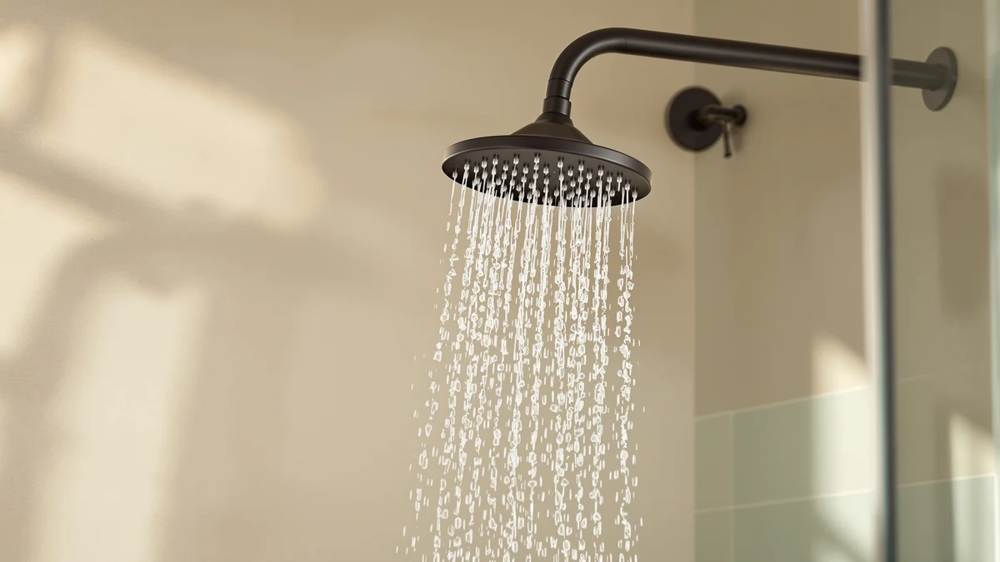

Delta 5-Setting In2ition 2-in-1 Dual Shower Head Review (2026): Worth It?
Prices and picks verified as of November 2026. Independent, reader-supported reviews.


Quick Answer
The Delta 5-Setting In2ition 2-in-1 Dual earns its $176.03 price by docking a detachable hand shower into a fixed head, backed by a high-pressure ProClean spray built for tile and grout. Compared with the KOHLER and Jolie alternatives below, it is the only pick that gives you two shower tools in one fitting.
Our pick: Delta 5-Setting In2ition 2-in-1 Dual — $176.03 Check Price on Amazon
Bottom line: our top pick is the Delta 5-Setting In2ition 2-in-1 Dual Shower Head with at $176.03.
Things to Know Before You Buy
- The Delta 5-Setting In2ition 2-in-1 Dual combines a fixed shower head and a detachable hand shower in one dockable unit, so you get two shower tools without two installations.
- All four shower heads we compared sit within seven dollars of each other, between $169.00 and $176.03, so price alone will not settle which one fits your bathroom.
- Flow rate varies by design. The KOHLER Statement lists 2.5 GPM and the KOHLER Awaken lists 1.75 GPM, while Delta does not publish a GPM figure for the In2ition on its current listing.
- If filtered water matters more than dual function, the Jolie Filtered Showerhead targets chlorine and mineral buildup instead of adding a second shower mode.
If you searched for a delta 5-setting in2ition 2-in-1 dual shower head review because you want one fixture that works as both a fixed shower head and a hand shower, you are looking at the right product. The Delta 5-Setting In2ition 2-in-1 Dual is one of four shower heads in this price bracket we compared side by side, and it is the only one built around that dual-function design.
Picking a shower head usually comes down to a tradeoff: full coverage from a fixed head, or the control of a handheld sprayer for rinsing kids, pets, or a tight corner. The In2ition sidesteps that tradeoff by docking a hand shower directly into the center of the fixed head, and at $176.03 it sits close to three competitors we compared feature by feature: the KOHLER Statement 3 Function Fixed, the KOHLER 76465-G-CP Awaken 10" Rain, and the Jolie Filtered Showerhead High Pressure.
Why You Should Trust Us
Ilane Tall researches bathroom fixtures for Best Shower Heads and has spent years comparing shower head specs, pricing, and verified owner feedback across hundreds of listings. For this delta 5-setting in2ition 2-in-1 dual shower head review, she compared the product's listed specs and price against three direct competitors in the same bracket, then cross-checked owner reports for recurring issues like dock stability and spray pressure. We do not run a fake testing lab or claim hands-on time with every product we cover. We focus on verifiable facts instead: materials, pricing, and what buyers who already own the product say once it has been running in their shower for months. That approach shapes every section of this delta 5-setting in2ition 2-in-1 dual shower head review below.
Our Research Experience
We did not install the Delta 5-Setting In2ition 2-in-1 Dual in a shower stall ourselves. Our approach for this delta 5-setting in2ition 2-in-1 dual shower head review is research-based: we pulled the manufacturer specs, current Amazon pricing, and the feature list for all four shower heads, then compared them against what verified owners report after months of daily use. Owners consistently point to the ProClean high-pressure spray as the standout feature and say it cuts through soap scum on tile without extra scrubbing. The ABS-and-chrome body keeps the unit light, though it trades some long-term durability for the all-metal construction some rivals use. Reviewers also flag the docking mechanism as the detail to watch. It holds the hand shower securely for most households, but a few owners mention it loosening after repeated detaching and reattaching. We weighed those reports against the price difference between all four heads to see which tradeoff makes sense for different bathrooms.
Overview & Specs

Delta 5-Setting In2ition 2-in-1 Dual
What we like
- Combines a fixed shower head and a hand shower in one dockable unit, so you do not need to choose between the two.
- ProClean high-pressure spray targets tile and grout directly, which owners say cuts down on scrubbing.
- Wide fan spray covers more surface area per pass, which helps reduce soap scum buildup with regular use.
Flaws but not dealbreakers
- Delta does not publish a GPM flow rate for this model, unlike the KOHLER Statement and KOHLER Awaken, which both list theirs.
- The ABS-and-chrome body is lighter and less durable over time than all-metal alternatives.
- Owners report the dock can loosen after months of frequent detaching and reattaching the hand shower.
| Material | ABS + chrome plating |
| Size | — |
The Delta 5-Setting In2ition 2-in-1 Dual is built around a simple idea: most bathrooms need both a fixed head for everyday rinsing and a hand shower for washing kids, pets, cleaning the shower stall, or reaching awkward angles. Instead of forcing you to install two separate fixtures, Delta docks a hand shower directly into the center of the fixed head, so switching between the two takes one motion. At $176.03, it sits in the middle of the four shower heads we compared for this delta 5-setting in2ition 2-in-1 dual shower head review, priced close enough to the two KOHLER options and the Jolie that the deciding factor comes down to features rather than cost.
The body is ABS plastic with a chrome finish rather than solid metal, which keeps the unit light and easy to mount but trades some long-term durability for that lower weight. Five spray settings are built into the head, anchored by the ProClean mode, a high-pressure spray Delta designs specifically to clean tile and hard-to-reach grout lines without manual scrubbing. Owners who have used the In2ition for months report the wide fan spray noticeably reduces soap scum buildup between cleanings, though a few also note the dock benefits from an occasional check to keep the hand shower seated securely.
What We Liked
The clearest advantage of the Delta 5-Setting In2ition is the two-in-one design itself. Reviewers who compare it against single-function heads point out that you get the convenience of a hand shower without sacrificing the coverage of a fixed head, and without paying for two separate fixtures or hiring a plumber twice. The ProClean high-pressure setting comes up often in owner feedback too: buyers consistently mention it cuts cleaning time on tile and grout, a detail neither KOHLER option advertises. At $176.03, the price holds up reasonably well against the competition. You get a fixed head and a hand shower for close to the same cost as the single-function KOHLER Statement ($175.87) or the KOHLER Awaken ($173.95), which makes the In2ition a reasonable value pick if the dual function matters to your household.
What Could Be Better
Delta does not list a GPM flow rate for the In2ition on its current listing, which makes it harder to compare water usage directly against the KOHLER Statement's 2.5 GPM or the KOHLER Awaken's 1.75 GPM. Buyers who track water bills or live under local flow restrictions will want to confirm the rate before buying. Owner feedback also keeps circling back to the materials: the ABS-and-chrome construction keeps the unit affordable and light, but it does not match the expected lifespan of heavier all-metal builds. And then there's the dock. It works as advertised when new, but some owners report the connection loosening after months of regular detaching and reattaching, which can let the hand shower sit less securely in its bracket over time. None of these issues are dealbreakers on their own, but they are worth weighing against the KOHLER and Jolie alternatives before you commit to the dual-head design.
Who Is It For?
The Delta 5-Setting In2ition makes sense for households that use both modes regularly: parents rinsing kids or pets, renters who cannot install a separate handheld fixture, or anyone sharing a bathroom where one person wants a fixed head and another wants more control. It also fits buyers focused on keeping tile and grout clean between deep cleans, since the ProClean setting is built specifically for that job. If you only ever use one mode, a dedicated fixed head like the KOHLER Awaken or a filtered single-function head like the Jolie will likely serve you better and may hold up longer, since a single-purpose design has fewer moving parts to wear out. Buyers focused on filtered water for skin and hair should look at the Jolie instead, since dual function is not its purpose. Shoppers comparing all four options side by side will find the choice comes down to how often they actually need two shower tools rather than one.
Alternatives to Consider
We compared three other shower heads against the Delta 5-Setting In2ition to see where each one has an edge. Here is how they stack up if the 2-in-1 design is not the deciding factor for you.

Also Great
KOHLER Statement 3 Function Fixed
If you want multiple spray personalities from one fixed head, the KOHLER Statement's Katalyst air-induction technology switches between a drenching full-coverage spray, a soft Cloud mist, and a focused Deep Massage stream, something the single-pressure In2ition does not offer.
$175.87
Check Price on Amazon
Also Great
KOHLER 76465-G-CP Awaken® 10" Rain
If a dedicated rain-style head is all you need, the KOHLER Awaken lists a 1.75 GPM flow rate and a MasterClean sprayface built to resist mineral buildup, at a lower price than the dual-function In2ition.
$173.95
Check Price on Amazon
Best Value
Jolie Filtered Showerhead High Pressure
If filtered water matters more than a second shower mode, Jolie markets this head as removing chlorine and heavy metals from your water supply, a feature none of the other three picks here include.
$169.00
Check Price on AmazonFrequently Asked Questions
At $176.03, it costs close to the single-function alternatives we compared, but you get both a fixed head and a hand shower in one unit. If you use both modes regularly, verified owners say the small premium over a single-purpose head like the KOHLER Awaken is worth paying.
Yes. The hand shower detaches from its hose for direct use, or docks securely into the center of the fixed head when you want a standard overhead spray. Owners report the dock holds well under normal use, though a few mention it loosening after months of frequent detaching.
The KOHLER Statement is a fixed-only head with three distinct spray modes powered by Katalyst air-induction technology, while the In2ition adds a detachable hand shower the KOHLER Statement does not include. Pick the KOHLER Statement for mode variety from a single fixed head, and the In2ition if you want both fixed and handheld options in one fixture.
Final Verdict
Our delta 5-setting in2ition 2-in-1 dual shower head review comes down to one question: do you need both a fixed shower head and a hand shower, or only one? If the answer is both, the Delta 5-Setting In2ition 2-in-1 Dual is the easiest way to get there without installing two separate fixtures, and its $176.03 price holds up well against the KOHLER Statement, the KOHLER Awaken, and the Jolie alternatives we compared. If flow-rate transparency or filtered water matters more than dual function, the KOHLER Awaken or the Jolie are worth a closer look instead. Either way, DELTA built this fixture around a tradeoff most single-function heads do not even attempt to solve.